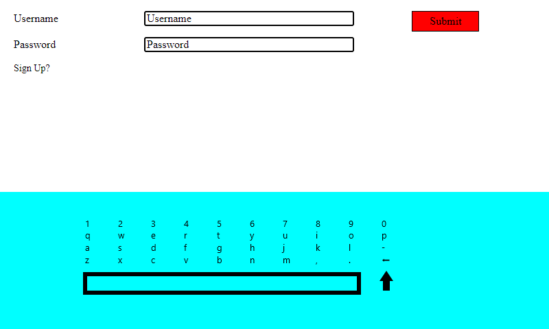
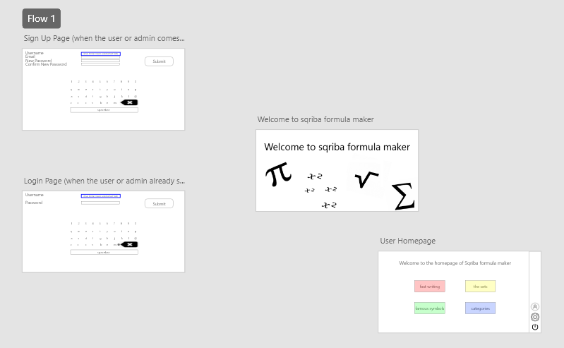

Stage
In het begin van het stage kreeg ik introductie van het stagebedrijf, ik kreeg ook te horen wat de taken waren, ofwel de opdrachten.
Hoe en wat ik kan verwachten op de stage en ook wat introductie met de werkomgeving van het product en programmeren. Mijn taak was als eerste om de app te onderzoeken, waar ik de app ga verder ontwikkelen.
Ik koos de opdracht, "Formula Maker", dat is een taak om wetenschappelijke symbolen in de product te zetten. Ik moest ook user stories maken, voor dat ik ging beginnnen met programmeren en ik moest ook
een mindmap maken, categorieën maken voor formula symbolen per onderwerp. Bij mijn tweede meeting, kregen we (ik en Madav) een overzicht van wat ik allemaal zou doen in de stage. Ik kreeg ook een uitnodiging
voor een scrum meeting, hoe dat echt eruit ziet. En de volgende meeting ging ik en met de stagebegeleider overleggen over de user stories. In de user stories moest ook een login en signin page maken voor de
product SQRIBA, daarbij ging ik leren hoe je met h2 databases kan werken met java, dit was voor mij echt nieuw om iets te leren. Ik heb zelfs een programma gebouwd, dat de database ook op excel bestand komt te liggen.
Ik leerde ook hoe je symbolen kan maken met behulp van gcode.